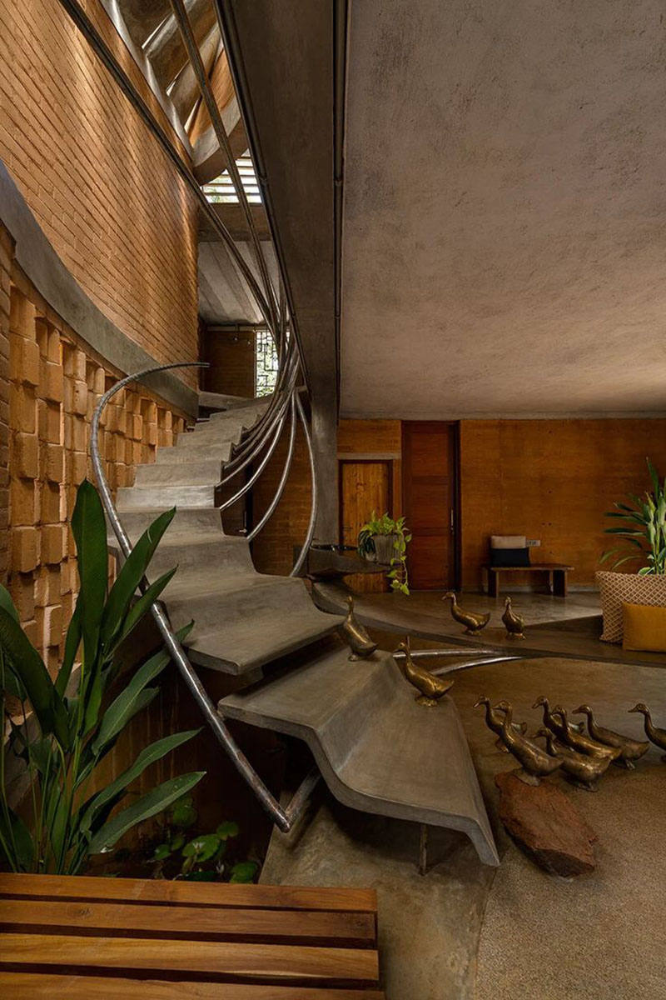

Bildstudier
En trappa med mjuka former
Det första jag lägger märke till är trappan. Den är gjord av betong men har en mjuk, svängd form. Bakom den finns en tegelvägg som gör att materialen skiljer sig tydligt från varandra.
Ljuset kommer in uppifrån. På trappan och golvet står små ankfigurer, en detalj som gör rummet mer personligt.
Det jag fastnar för
- Kontrasten mellan betong, tegel och trä.
- Hur dagsljuset framhäver trappans form.
- De små detaljerna i ett stort rum.
